Agendar Nueva Cita
Aquí se pueden agregar nuevas citas que se le mostrarán tanto a usted como al paciente.

Aquí se pueden agregar nuevas citas que se le mostrarán tanto a usted como al paciente.
Aquí podrá modificar las citas previamente agendadas. Los cambios se generarán para el paciente también.
Aquí podrá cancelar citas que ya tenía programadas. Se le informará al paciente de esto.
Aquí podrá visualizar las proximas citas que tenga.